En la sección de conceptos importantes, aprendimos que tenemos 2 tipos de parámetros en las rutas, los Path parameter y Query parameter
Veamos un repaso de estos parámetros
Los "path parameters" (parámetros de ruta) y los "query parameters" (parámetros de consulta) son dos formas diferentes de pasar información a un servidor en Express.js, y cada uno se utiliza en diferentes contextos según el diseño de la aplicación.
Path parameters
Path Parameters:
Uso: Los parámetros de ruta se utilizan para capturar valores específicos de la URL que forman parte de la ruta misma.
Ejemplo de URL: /users/:userId
Ejemplo didáctico en Express.js:
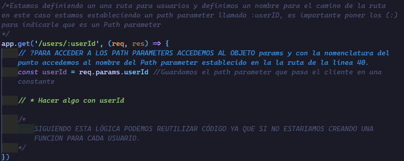
Características:
Los parámetros de ruta se definen en la ruta misma, precedidos por : en la definición de la ruta.
Son útiles cuando se necesita identificar un recurso específico en la URL, como un ID de usuario en la ruta /users/:userId.
Son parte de la ruta y no afectan la lógica de enrutamiento de manera significativa.
Path parameters ejemplo
Realizaremos una práctica, por lo cual estaremos haciendo parte de una API para configurar las rutas de acceso
Estaremos simulando una base de datos con un archvio JSON con la siguiente estrcuctura.
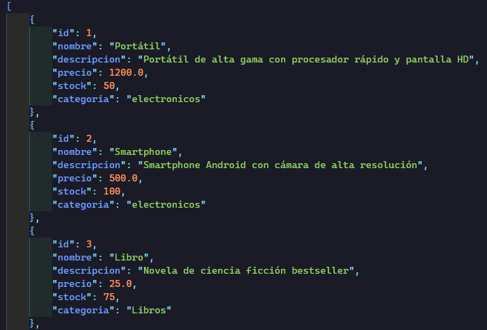
Leemos nuestro JSON oon readFile y pasamos el JSON a un objeto iterable para JS.
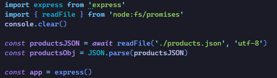
Ahora lo que haremos es configurar las rutas, lo que haremos es devolver la información de una categoría de productos
Esta seria la estructura de nuestra URL
http://localhost:3000/categorias/nombreCategoria
Lo que queremos es devolver la información del path parameter nombreCategoria
El código quedaría de la siguiente manera
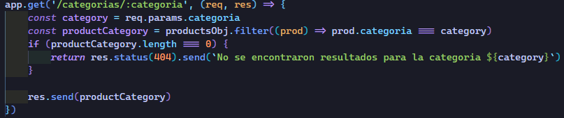
Explicación
Este código define una ruta en Express.js para manejar solicitudes GET a la URL /categorias/:categoria, donde :categoria es un parámetro dinámico que representa la categoría de los productos. La función de manejo de solicitudes filtra los productos según la categoría proporcionada y responde con los productos encontrados o un mensaje de error si no se encontraron productos.
Resultados
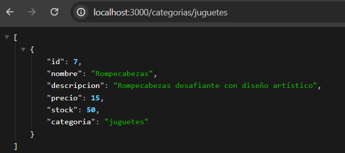
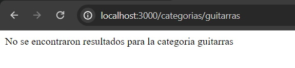
Query Parameters
Query Parameters:
Uso: Los parámetros de consulta se utilizan para enviar datos a través de la URL como pares clave-valor, generalmente para filtrar o personalizar la respuesta del servidor.
Ejemplo de URL: /search?query=keyword&page=2
Ejemplo didáctico en Express.js:
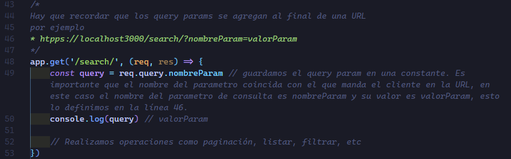
Características:
Los parámetros de consulta se incluyen en la parte de la URL después del signo de interrogación (?) y se separan por & si hay varios.
Son útiles cuando se necesita enviar información adicional a través de la URL sin afectar la estructura de la ruta, como parámetros de búsqueda, filtros, o datos opcionales.
Son flexibles y pueden no estar presentes en la URL sin afectar la funcionalidad de la ruta.
Conclusión entre Path parameter y Query parameter
En resumen, los parámetros de ruta se utilizan para capturar valores específicos de la URL que forman parte de la ruta misma, mientras que los parámetros de consulta se utilizan para enviar datos adicionales a través de la URL como pares clave-valor para personalizar o filtrar la respuesta del servidor. Ambos tienen diferentes casos de uso y se utilizan en contextos diferentes según los requisitos de la aplicación.
Query parameters ejemplo
Una ventaja que tienen los query params es que no intervienen con la ruta, si no se llegase a poner un query param en la URL el resultado sigue siendo el normal, pero si en dado caso especificamos uno por ejemplo si pasamos en la URL ?ordenar=stock
Nosotros somos los que decidimos el nombre del parámetro de consulta y de acuerdo a su nombre y valor, es lo que nosotros programaremos.
En este caso lo que haremos es programar un parametro de consulta para ordenar los productos de la categoría establecida en la url de forma ascendente dependiendo de su stock.
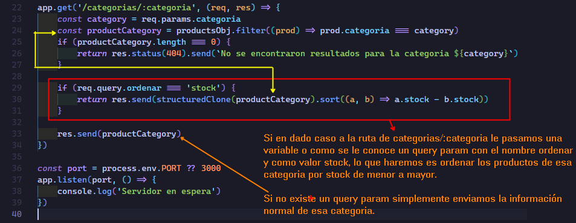
Resultado
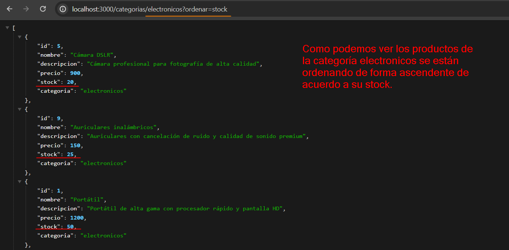
Si no pasamos un parámetro de consulta simplemente tenemos el filtrado de aquellos productos que pertenencen a esa categoría, por eso deciamos que los parámetros de consulta no intervienen con la estructura de la ruta.
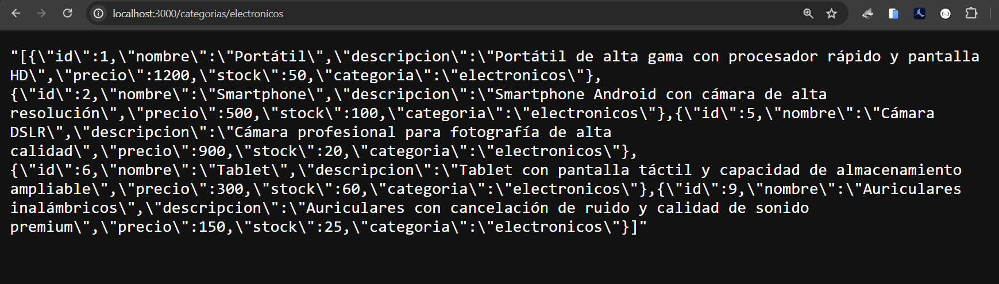
Algunos usos con request
Ya hemos visto algunos de los usos como, acceder a los parámetros de ruta y parámetros de consulta, aquí veremos otro tipo de usos tambien comunes.
Acceso al cuerpo de la solicitud
Para las solicitudes POST, PUT o PATCH, puedes acceder al cuerpo de la solicitud utilizando req.bodydespués de haber configurado el middleware adecuado (por ejemplo,
express.json() o
express.urlencoded()).
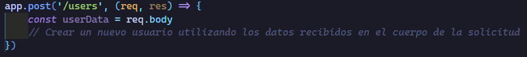
Acceso a las cabeceras de la solicitud
Puedes acceder a las cabeceras de la solicitud utilizando req.headers.
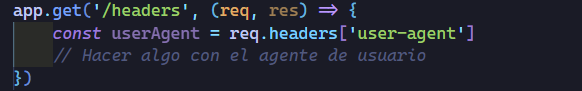
Verificación de la autenticación
Puedes verificar la autenticación del usuario utilizando los datos proporcionados en las cabeceras de la solicitud, como tokens de acceso.
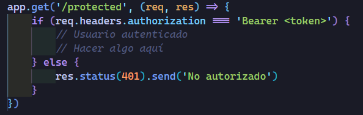
Algunos usos con response
Ya hemos visto algunos usos como enviar información, mensajes de estado.
El objeto response (a menudo abreviado como res) en Express se utiliza para enviar una respuesta HTTP al cliente. Aquí tenemos algunos ejemplos de cómo podemos utilizar el objeto response dentro de un endpoint.
Enviar JSON
Podemos enviar datos JSON al cliente utilizando el método json().
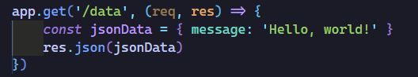
Enviar un archivo estático
Podemos enviar un archivo al cliente utilizando el método sendFile(), utilizando el método resolve() que nos brina el módulo de PATH.
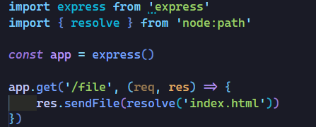
Renderizar una vista (usando un motor de plantillas)
Si estamos utilizando un motor de plantillas como PUG, EJS o Handlebars, podemos renderizar una vista y enviarla al cliente.
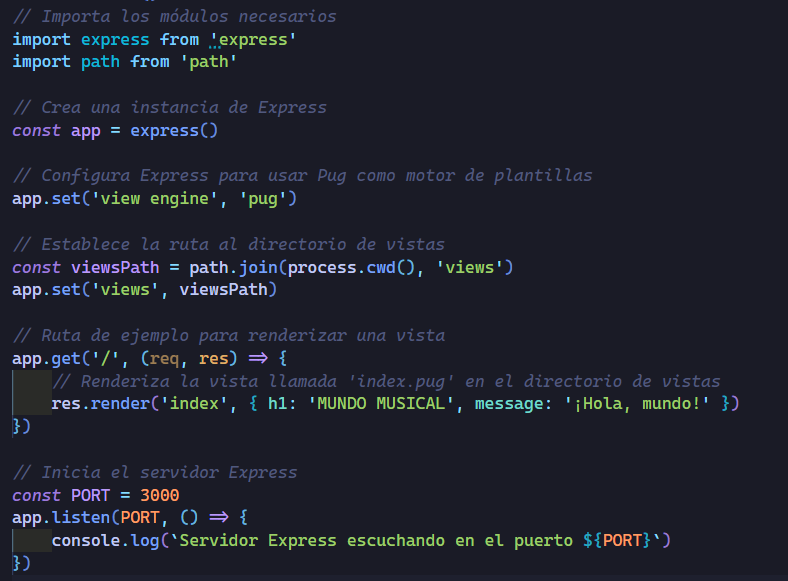
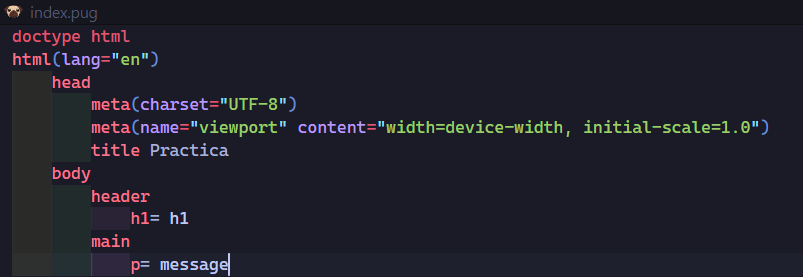
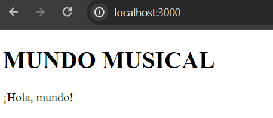
Redireccionar a otra URL
Podemos redireccionar al cliente a otra URL utilizando el método redirect().
En express sin especificar un código de estado de redirección, se utiliza el código de estado 302 Found. Este código de estado indica que la redirección es temporal y el cliente debería volver a enviar la misma solicitud a la nueva ubicación proporcionada en el encabezado Location.
Redirección 301 (Moved Permanently):
Significado: Indica que la página ha sido movida permanentemente a una nueva ubicación.
Impacto en los motores de búsqueda: Los motores de búsqueda interpretan esto como una instrucción para actualizar sus índices con la nueva ubicación y tratar la página original como obsoleta.
Almacenamiento en caché en navegadores: Los navegadores pueden almacenar en caché la nueva ubicación y utilizarla para futuras solicitudes.
Uso apropiado: Deberías utilizar una redirección 301 cuando una página ha sido permanentemente movida a una nueva ubicación y quieres que los motores de búsqueda y los usuarios actualicen sus enlaces y marcadores.
Redirección 302 (Found o Temporary Redirect):
Significado: Indica que la página ha sido movida temporalmente a una nueva ubicación.
Impacto en los motores de búsqueda: Los motores de búsqueda interpretan esto como una instrucción para seguir indexando la página original y no actualizar sus enlaces.
Almacenamiento en caché en navegadores: Los navegadores no almacenan en caché la nueva ubicación y continúan solicitando la página original para futuras visitas.
Uso apropiado: Deberías utilizar una redirección 302 cuando una página ha sido temporalmente movida a una nueva ubicación, por ejemplo, durante el mantenimiento del sitio o para pruebas temporales.
Casos de usos con redirecciones
Tenemos varios casos comunes en los que puedes redireccionar a los usuarios a otra página en tu aplicación web.
Aquí hay algunos ejemplos:
Después de un inicio de sesión exitoso: Después de que un usuario inicie sesión correctamente en tu aplicación, es común redirigirlos a una página de inicio o a la página que intentaron acceder antes de iniciar sesión.
Después de completar un formulario : Después de que un usuario complete un formulario (por ejemplo, un formulario de registro o un formulario de contacto), puedes redirigirlos a una página de confirmación o a una página que muestre los detalles de lo que acaban de enviar.
Después de completar una acción de autenticación o autorización: Después de que un usuario autorice una acción (por ejemplo, autorizar una compra o cambiar la configuración de su cuenta), puedes redirigirlos de regreso a la página desde la que iniciaron la acción.
Manejo de rutas no encontradas: Cuando un usuario intenta acceder a una ruta que no existe en tu aplicación, puedes redirigirlos a una página de error personalizada o a la página de inicio.
Enrutamiento basado en lógica de negocio: Dependiendo de la lógica de tu aplicación, es posible que necesites redirigir a los usuarios a diferentes páginas en función de ciertas condiciones o acciones específicas que hayan realizado.
La redirección no es la técnica habitual para manejar casos de rutas no encontradas (404 Not Found) en una aplicación Express. La redirección se utiliza más comúnmente para enviar al cliente a una nueva ubicación cuando la ruta solicitada existe pero se ha movido o cambiado temporal o permanentemente.